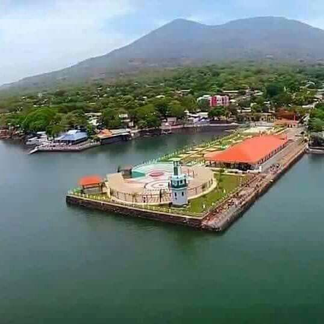
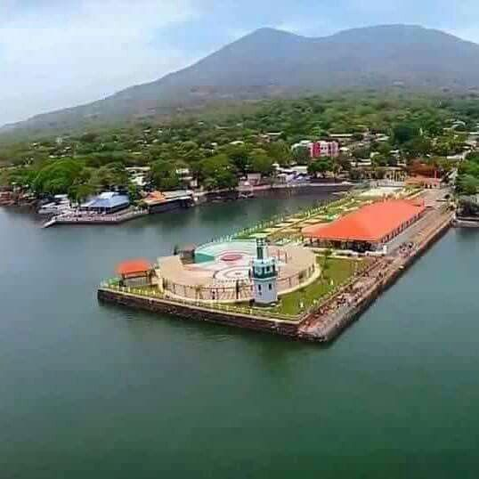

Historia de la union
El territorio de lo que hoy es la Ciudad de La Unión, fue divisado por primera vez, desde las aguas del Océano Pacífico, cuando a principios del año 1522, el piloto Andrés Niño llegó al Golfo de Conchagua (Golfo Chorotega), y lo bautizó con el nombre de GOLFO DE FONSECA, en honor al Obispo de Burgos y Presidente del Consejo de Indias, Fraile Juan Rodrigo de Fonseca.
Andrés Niño desembarcó en la Isla de Meanguera del Golfo frente a las actuales playas del Departamento de La Unión, la conquista no se inició, sino dos años más tarde, en 1524 cuando llegó al territorio salvadoreño el Capitán Hernán Cortes. En 1588 el pirata Drake amenazó a los habitantes del Golfo de Fonseca; así mismo para el año de 1596 los Frailes Seráficos Españoles fundaron la Guardianía de Nuestra Señora de las Nieves de Amapala en el lugar que hoy se conoce como Pueblo Viejo.
Para los años de 1682 llegó una tropa de piratas ingleses al Golfo de Fonseca; se dice que estos causaron destrucción y muerte en los pueblos lencas, los habitantes fueron despojados de sus bienes, razón por la cual emigraron hacia el norte de Honduras y Amapala.
A fines del siglo XVII, por rivalidades entre neoconchaguas y amapalas, los primeros establecieron en el Litoral de la Bahía de Fonseca, el Puerto Perigolfeño denominado "El embarcadero de los conchaguas". A finales del siglo XVIII, Amapala era caserío en franca decadencia, ya sin autoridades militares, civiles y religiosas; por cuya causa se ordenó que sus vecinos se trasladaran a "El embarcadero de los conchaguas", que recibió el nombre de "PUERTO DE SAN CARLOS", en homenaje al Rey de España Carlos III. En 1807 el Puerto de San Carlos, figura incluido como pueblo del partido de San Alejo en la intendencia de San Salvador por el corregidor Antonio Gutiérrez y Ulloa.
Poblacion 29 733 hab.(2012)